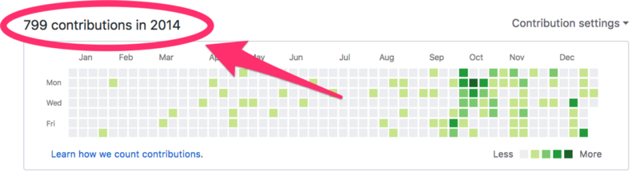
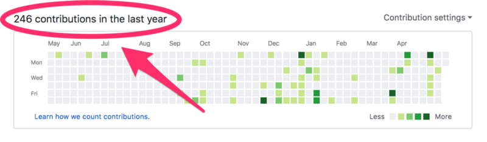

Published on May 21, 2018 on Medium.com
(Source: Lucas Amunategui)
Whenever I am asked how to break into this field, I reply, ‘push it out into the public domain on a regular basis’.
Being a blogger and liking the sound of my voice, I unfortunately murk it up with more stuff, like taking classes on Udacity and Coursera, participating in competitions on Kaggle, and getting a degree in data science. But, at the top of the list, will always be, create, invent and push out regularly!
It may go against the grain within some organizations, so don’t share trade secrets or other people’s IP; but there’s always something within your skillset that others will find interesting.
It’s a miracle technique! It’s isn’t about quantity or quality but about doing it on a regular basis and building that production muscle — it becomes magic! It will take you to unexpected places. Kind of like compounding interest or butter in your coffee — there’s no downside to this approach!
Self-Development
You will learn to express yourself better, write better, and put yourself out there. You will gain a fuller grasp of the topics discussed — there is nothing like explaining it to others to learn it better yourself.
Great For Finding Jobs And Networking
You will be sending the clear message that you enjoy this stuff and spend time on it. That you are motivated, entrepreneurial, and you know your stuff — what kind of employer or customer could resist that? You will meet a lot of people, not just students but a wide range of professionals as well. You will be invited to speak at conferences and meet ups.
Great For Your Current Job
These may be stories for another entry, but I have connected with colleagues within a large health system through my You Tubes, I kid you not — people I would email directly and never get a reply — sometimes a social media knock is louder than an office door knock.
You become Accountable
You become part of the educational and research community, you become part of the internet, it becomes you!
And I Eat My Dog Food
I am a believer and follower — I started pushing code and blog entries actively In 201

And 4 years later, barely halfway through 2018, I’m still pushing stuff!

So don’t worry too much about what you’re writing about, worry more about doing it on a regular basis. If you like working on projects, push out on GitHub, if you write articles, try Medium, or Reddit, if you like to give professional advice, try LinkedIn. Roll your own, do it on WordPress or GitHub.io. If you are a live type, try podcasts and YouTubes, mix and match, do multiples, or do them all!
Push!
Manuel Amunategui